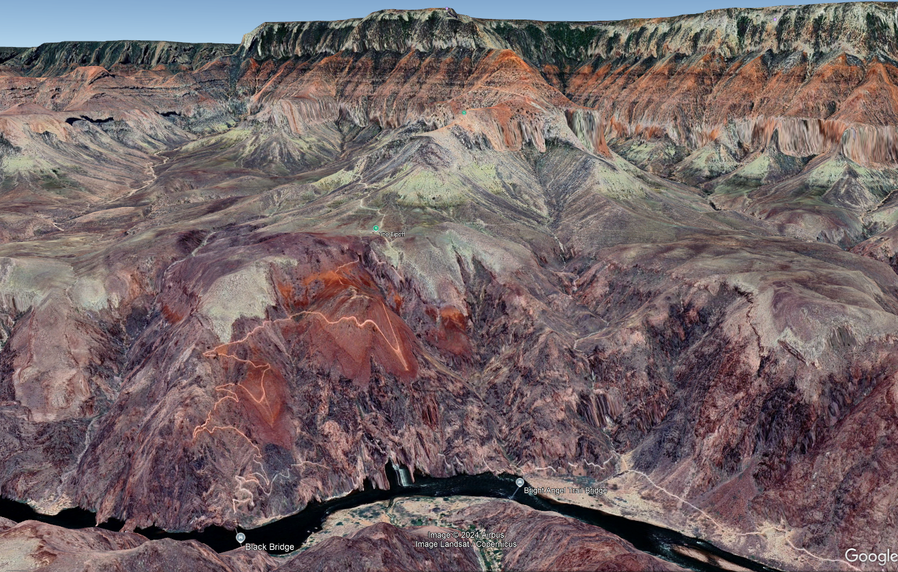
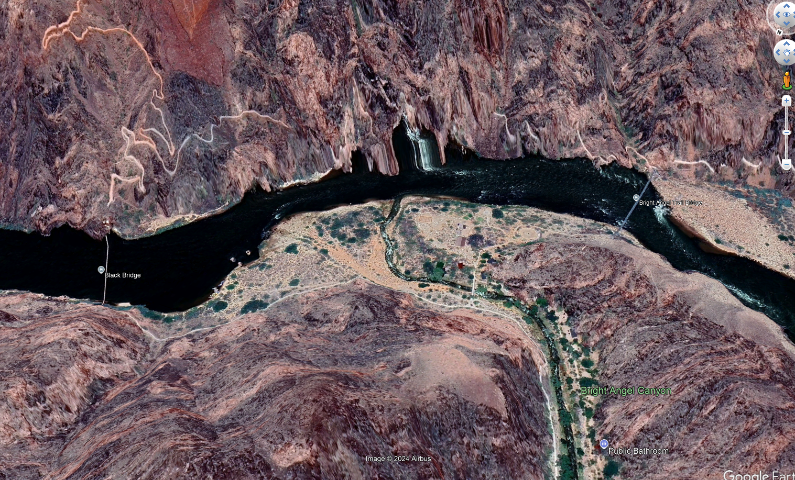
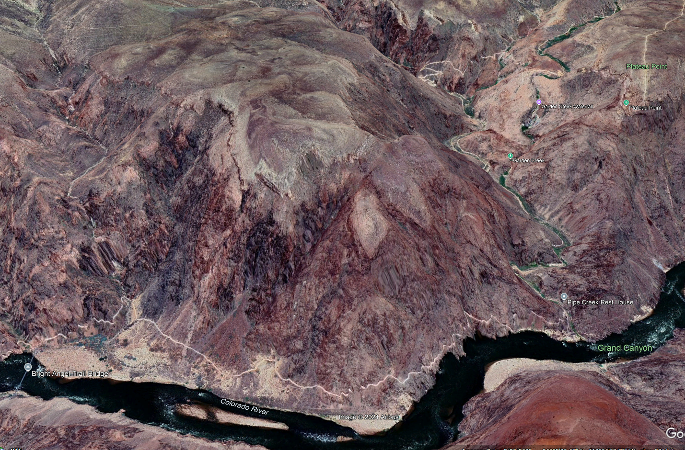
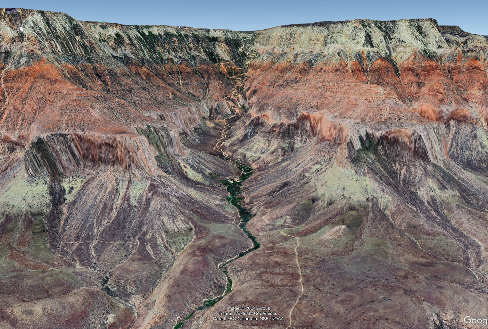

Grand Canyon South Kaibab Trail and Bright Angel Trail
(Click on pictures to enlarge/restore size)

South Kaibab Trail - Looking down from the South Rim
South Kaibab Trail - Looking up from the Colorado River
Trails by the Colorado River
Bright Angel Trail - the lower section
Bright Angel Trail - the upper section

Bright Angel Trail - overview